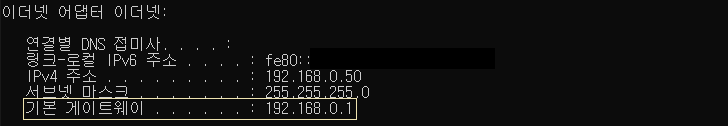
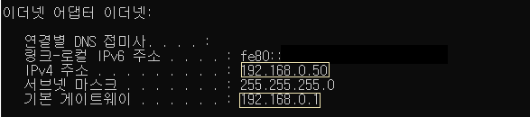

*개인적인 공부 내용을 기록하는 용도로 작성한 글 이기에 잘못된 내용을 포함하고 있을 수 있습니다.
이전 포스팅에서 IPv4주소와 서브넷 마스크의 개념에 대해 정리했다. 이어서 이번 포스팅 에서는 cmd창에 ipconfig 명령어를 입력시 나오는 "기본 게이트웨이"에 관한 내용을 간략하게 정리해 보고자 한다.
#1 Gateway
#2 LAN영역
#3 라우팅과 스위칭
#1 Gateway

네트워크를 하나의 집 이라고 가정해 보자. 자신의 집(네트워크)안에서 이동한다면 굳이 문(게이트웨이)를 거칠 필요가 없을 것이다. 하지만 만약 나의 집에서 다른 집으로 이동하기 위해선 문을 거쳐야 다른 곳으로 이동할 수 있다. 이 때 게이트웨이는 바로 문과 같은 역할을 수행한다.
이처럼 게이트웨이(Gateway)를 한 문장으로 요약하자면 다른 네트워크로 이동하기 위한 관문과 같은 존재라고 생각하면 된다. 게이트웨이를 라우터(Router)라고도 부르는데 소프트웨어적 측면을 강조할 때는 게이트웨이라 부르고 하드웨어적 측면을 강조할 때는 라우터라고 부른다. (흔히 집에서 볼 수 있는 KT공유기가 바로 라우터이다.)
#2 LAN영역
LAN영역이란 동일한 Network ID를 공유하는 장치의 집합공간이다. 예를 들어 192.168.0.1 ... 192.168.0.10 과 같이 Network ID가 같은 기기는 동일한 LAN영역에 있다고 말할 수 있으며 192.168.0.1 ... 192.168.0.10 사이에선 게이트웨이가 없어도 통신을 수행할 수 있다.
하지만 만약 192.168.0.1 ... 168.16.12.10 같이 Network ID가 동일하지 않은 서로 다른 LAN영역에 존재하는 기기 사이에선 게이트웨이가 있어야 통신이 가능하다.
#3 라우팅과 스위칭
내 컴퓨터에서 다른 컴퓨터와 통신을 수행하고자 하면 운영체제는 출발지(내 컴퓨터)의 Network ID와 목적지의 Network ID를 비교한다. 만약 출발지와 목적지의 네트워크 ID가 동일하다면 목적지는 출발지와 동일한 LAN영역에 위치한다는 의미이다. 이런 경우에는 스위칭(Switiching)이 일어난다고 표현한다. (*스위칭은 스위치 장비에서 수행하는 기능으로 나중에 따로 정리할 예정이다.)
혹은 출발지와 목적지의 네트워크 ID가 다르다면 목적지와 출발지가 상이한 LAN영역에 위치한다는 뜻이다.
따라서 출발지와 목적지의 호스트를 연결해 주기 위해서는 게이트웨이(라우터)가 필요하다. 이렇게 다른 LAN 영역 사이를 연결해 주는 기능을 라우팅(Routing)이라고 부른다.
* 보통 기본 게이트웨이의 주소는 IPv4 주소에서 끝자리만 1로 바꾸어 설정한다.

이전 포스팅에 이어 IPv4주소 서브넷마스크 그리고 기본 게이트웨이에 대한 개념에 대해 모두 정리를 마쳤다. 이제 우리는 인터넷에 접속하기 위해선 IPv4주소 서브넷 마스크 기본 게이트웨이가 모두 적절하게 설정되어 있어야 한다는 말을 이해할 수 있을 것이다!